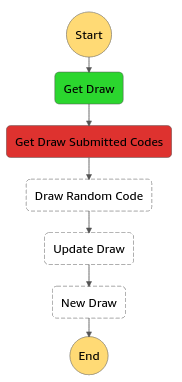

Serverless computing
Serverless computing is a category of cloud computing service that is nearly entirely hands-off and where you really do only pay for what you use. With serverless computing there is no virtual infrastructure for the user to manage and the user is only billed for when their code is running, down to the nearest 100 milliseconds.
### What is serverless computing? Services that run snippets of back-end code for apps and websites without any overhead of managing servers.
### Why does serverless computing matter? Serverless computing services reduce the overhead and cost of managing either physical or virtual infrastructure.
### Who does serverless computing affect? Businesses running websites and apps with a need for back-end services or analytics.
### When is serverless computing happening? Now—all of the major cloud platform providers offer a serverless computing service.
### How can I get serverless computing? Via your cloud platform of choice. Serverless computing is available via AWS, Google Cloud Platform, Microsoft Azure and IBM Bluemix.
# AWS Lambda
## Features * Built-in fault tolerance * maintains compute capacity across multiple Availability Zones * predictable and reliable operational performance. * No maintenance windows or scheduled downtimes.
## Suported Runtimes * Node.js — v8.10, v6.10 (nodjs, ECMAScript, typescript) * Python — 3.6, 2.7 * Java — Java 8 (java, scala, kotlin, groovy, cloujure) * .NET Core — .NET Core 1.0.1, 2.0, 2.1 (F#, C#) * Go — Go 1.x * [Scripting Languages](https://aws.amazon.com/blogs/compute/scripting-languages-for-aws-lambda-running-php-ruby-and-go/) — (PHP, ruby, go)
## Features * Automatic scaling * Orchestrate multiple functions (AWS Step Functions) * Integrated security model (IAM, VPC) * Pay per use (metered in increments of 100 milliseconds) * Flexible resource model (Setup only memory, allocates proportional CPU power, network bandwidth, and disk I/O)
## Cons * Hard to debug (reading logs) * Unable to install or configure other than available on server (Amazon Linux) * AWS Console
Serverless Framework
* Provider Agnostic — Build serverless applications quickly on any vendor. * CLI for building and deploying serverless applications. * Infrastructure As Code * ALM — support for local development, stages, rollback * Open source
## Installation ```bash # Installing the serverless cli npm install -g serverless # Updating serverless from a previous version of serverless npm install -g serverless # Login to the serverless platform (optional) serverless login # shorthand name (Not sure if available on Windows) # No problem for any *nix (including macOS) sls --version ```
## Setup AWS credentials ```bash # No need for those having .aws/credentials file # Test on all *nix like OS's (including macOS) # On windows test existence of file: # C:\Users\<username>\.aws\credentials cat $HOME/.aws/credentials # Add your own <key> and <secret> serverless config credentials --provider aws --key <key> \ --secret <secret> ``` [Read more on AWS - Credentials](https://serverless.com/framework/docs/providers/aws/guide/credentials/)
### Serverless Framework # [CLI](https://serverless.com/framework/docs/providers/aws/cli-reference)
## CLI Used for this course * [config credentials](https://serverless.com/framework/docs/providers/aws/cli-reference/config-credentials/) (used for aws credentials) * [create](https://serverless.com/framework/docs/providers/aws/cli-reference/create/) * [deploy](https://serverless.com/framework/docs/providers/aws/cli-reference/deploy/) * [remove](https://serverless.com/framework/docs/providers/aws/cli-reference/remove/)
## create ```bash # Create AWS function from nodejs tepmlate # If path not specified will create current dir! # By default is serverless create --template aws-nodejs --path <path> # python3 version serverless create --template aws-python3 --path <path> # Maybe some other language, list available templates: sls create --help ``` [Reference link](https://serverless.com/framework/docs/providers/aws/cli-reference/create/)
## deploy Deploys AWS and creates all specified resources, IAM roles and more via CloudFormation. Possibilty to specify stage and region. ```bash # deploys to AWS serverless deploy # deploys to AWS production stage serverless deploy --stage production ``` [Reference link](https://serverless.com/framework/docs/providers/aws/cli-reference/deploy/)
## remove Removes all resources created with deploy, possibility to specify stagen and region. ```bash serverless remove ``` [Reference link](https://serverless.com/framework/docs/providers/aws/cli-reference/remove/)
# serverless YAML
## service Name of the service. It will part of AWS Lambda name. ```yaml service: pifkan-draw-api ```
## custom ```yaml custom: dynamoTable: pifkan-draws-table # Can be called anywhere in this YAML file by: ${self:custom.dynamoTable} ```
## plugins Extra funcionality to serverless framework by plugins created by community. ```yaml plugins: - serverless-step-functions - serverless-python-requirements ```
## provider ```yaml provider: name: aws runtime: python3.6 stage: dev region: us-east-1 profile: xaeon deploymentBucket: ${self:custom.deploymentBucketName} environment: COGNITO_POOL_ID: ${self:custom.cognitoPoolId} ```
## provider ### iamRoleStatemnts ```yaml iamRoleStatements: - Effect: Allow Action: - dynamodb:Query - dynamodb:PutItem Resource: "arn:aws:dynamodb:us-east-1:*:table/${self:custom.dynamoTable}" - Effect: Allow Action: - cognito-idp:AdminInitiateAuth Resource: "arn:aws:cognito-idp:us-east-1:*:userpool/${self:custom.cognitoPoolId}" ```
## resources Create in AWS resource like DynamoDb, S3, ... ```yaml resources: Resources: pifkanDrawTable: Type: AWS::DynamoDB::Table Properties: TableName: ${self:custom.dynamoTable} AttributeDefinitions: - AttributeName: id AttributeType: N KeySchema: - AttributeName: id KeyType: HASH ```
## functions ```yaml functions: handler: handler: handler.draw events: - http: path: api/draws method: GET - http: path: api/draws/current method: GET handler2: handler2: handler2.execute environment: DYNAMODB_TABLE: ${self:custom.dynamoTable} events: - schedule: rate(7 days) ```
Pifkan
Code Gen Schduled
* Generates pifkan codes once in 7 days. * Generates 100 codes. * Stores generated codes to AWS DynamoDB. * Scheduled AWS Lambda process.
Users API
* Two groups (roles): *user* and *admin* * Register User (Only *user* group can be registred) * Auth User (authenticates users and sends *refresh token*) * AWS Cognito
Codes API
* Get All Generated Codes (only for *admin* role) * Get Code by name (for validaton of submitted code) * Using AWS DynamoDB table of generated codes.
Draws API
* Draw can be of status: *current* or *done*. * Get All *done* Draws (history of previous draws) * Get *current* Draw * Create Draw * only for *admin* role * mark last draw as *done* and creates new as *current*) * Stores all Draws to AWS Dynamo DB
Draw Codes API
* Get All Current Draw Codes * only for *admin* * all submitted codes for *current* draw * Submit Code for Draw * code is removed from generated DynamoDB * Draw random code * only for *admin* * for logic look in next section * Stores submitted codes into new DynamoDB * Uses all other DynamoDB's (Generated codes, Draws)
Draw Codes Step Function
* Uses AWS Step Functions (chained lambda functions) * Same logic *Draw Codes API* but broken to multiple functions.
State Machine

## serverless.yml Using plugin: *serverless-step-functions* ```yaml stepFunctions: stateMachines: Draw Random Code: name: ${self:custom.serviceName}-state-machine definition: Comment: "Draw a code from submitted codes and create new draw." StartAt: Get Draw States: Get Draw: Type: Task Resource: arn:aws:lambda:#{AWS::Region}:#{AWS::AccountId}:function:${self:service}-get-draw Next: Get Draw Submitted Codes ```